04
Bachelors
B.Arch, METU · Ankara · 2017 – 2022
METU · Middle East Technical University
Studied architecture at METU, one of Türkiye's most prestigious
institutions, where a rigorous design education fostered analytical
thinking, intellectual curiosity, and a research-driven approach to
architecture. The studio culture encouraged questioning conventions,
embracing interdisciplinary perspectives, and developing architecture
as a process of continuous exploration.
Selected Studio Works
01
Istanbul Repercussion
İstanbul Museum of Material Culture & Commerce
İstanbul, Turkey · Architectural Design IV · 2022 · Individual
A museum read through the circulation of goods — continuous temporary
exhibitions with a library, auditorium and restaurant, approached from
the crowded fabric of Eminönü Square.
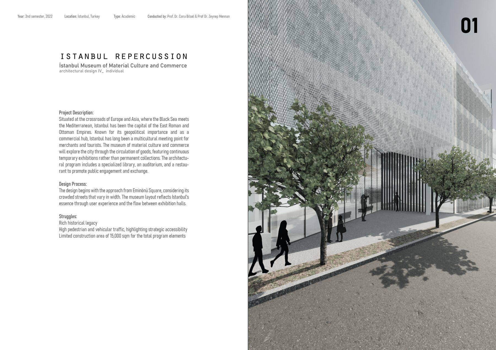
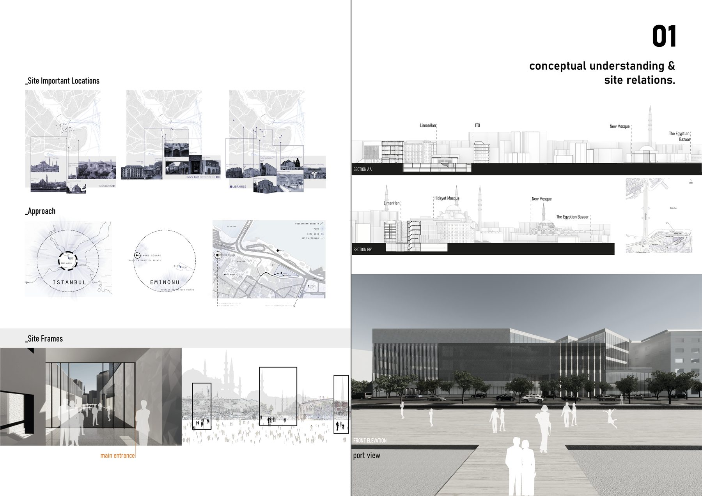
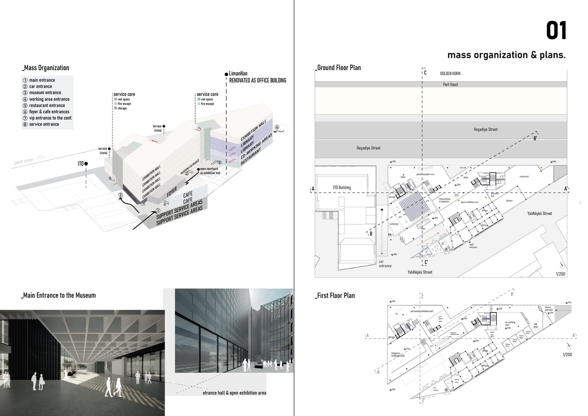
02
The Fossil
The Canopy as a Connective Element
Ankara, Turkey · Architectural Design III · 2021 · Group w/ Ebru Gürcan
A parametric canopy — the “Fossil” — designed as a sheltering, connective
structure between the METU Faculty of Architecture and its studios, built
with Grasshopper-driven organic geometry.
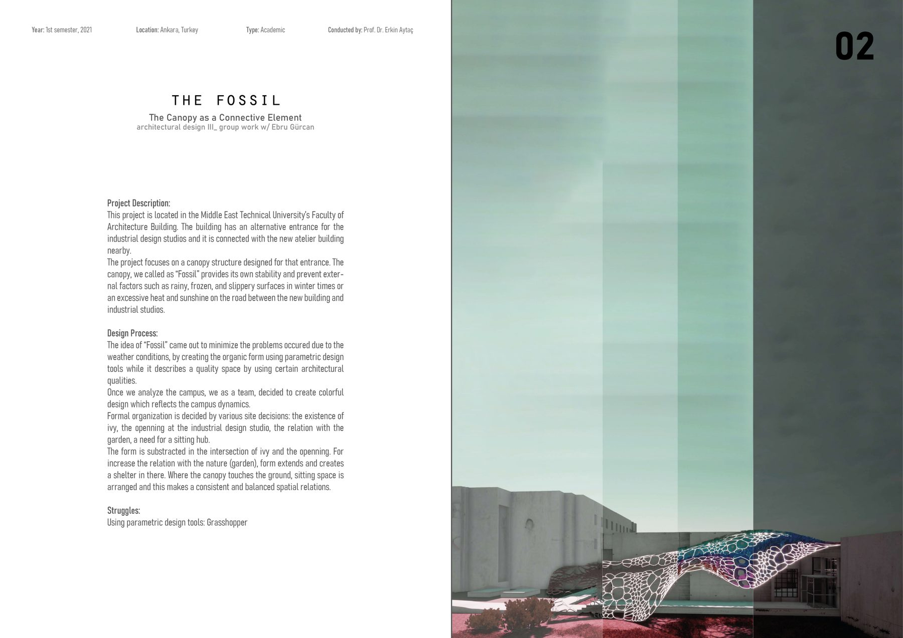
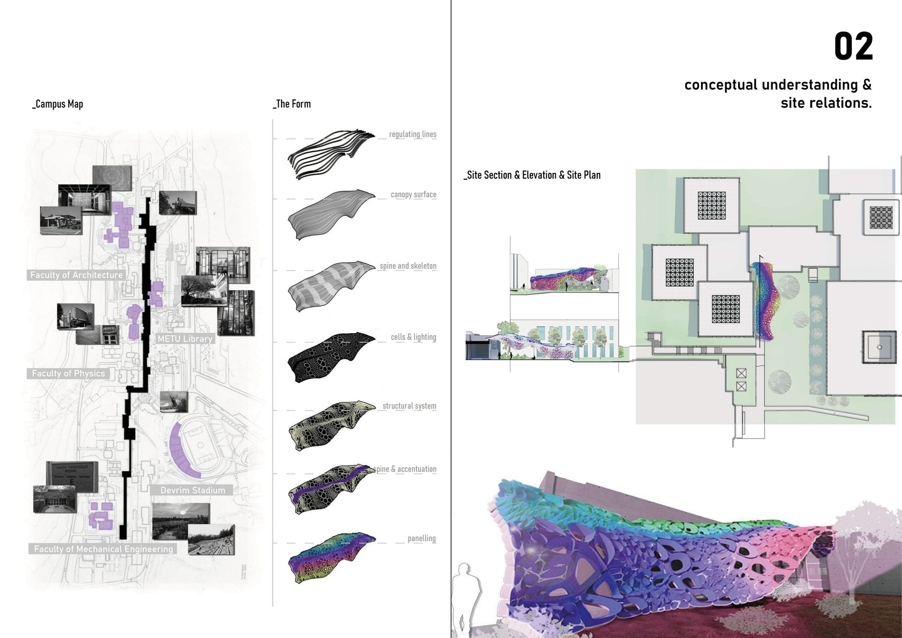
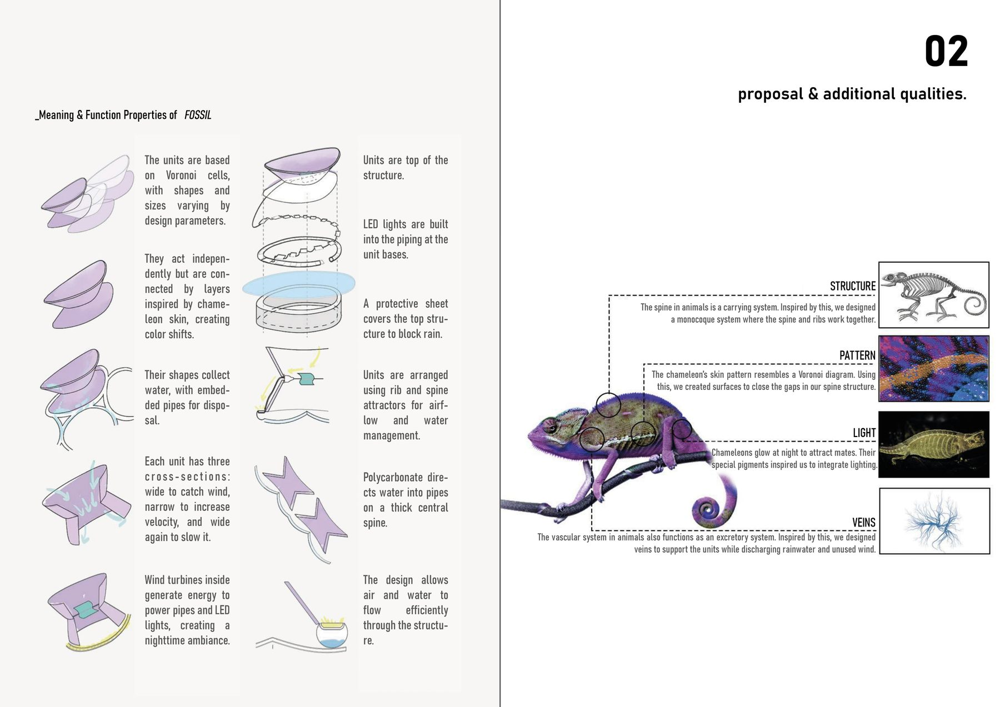
03
Street Needle
Soft Urbanism — Reclaiming Kızılay as a Vibrant City Center
Ankara, Turkey · Architectural Design IV · 2022 · Group work
Alternative scenarios that revitalize Kızılay, Ankara's central hub, through
targeted urban “acupuncture” interventions inspired by the spatial values
of each street.
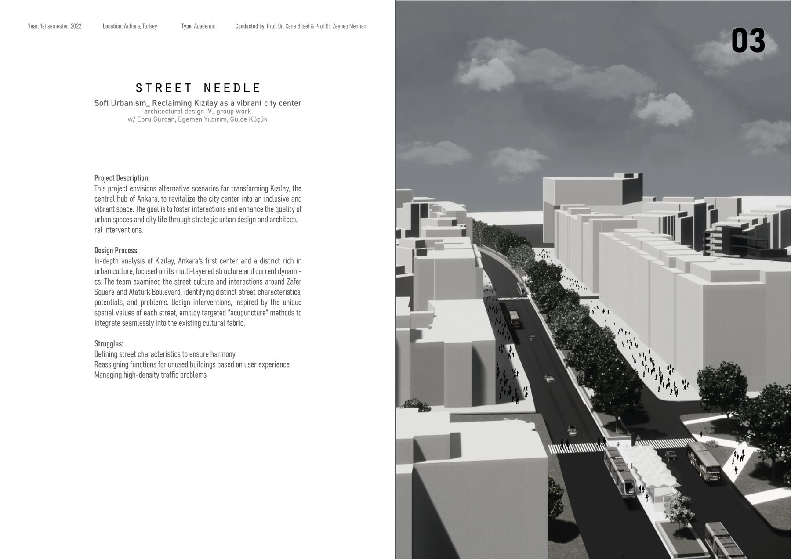
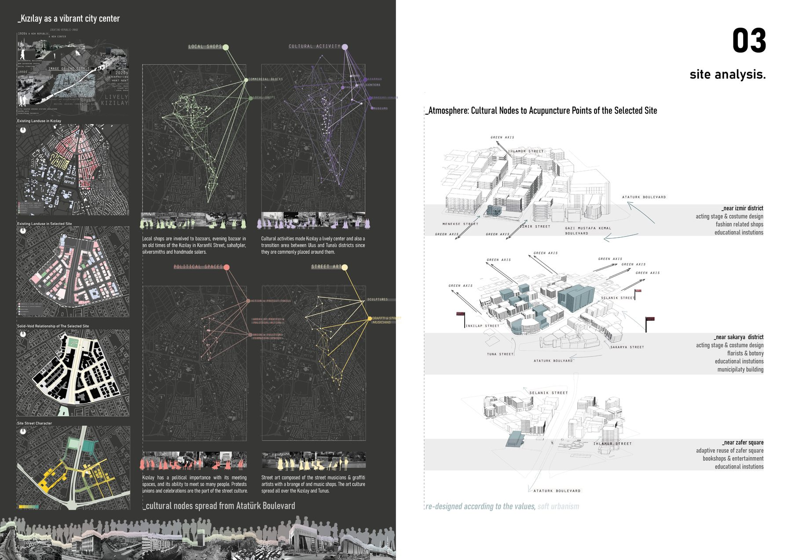
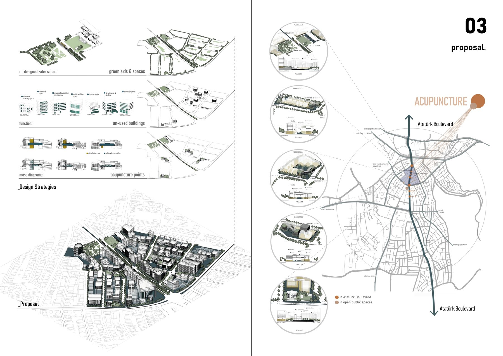
04
Bloom
Public Health Care & Therapeutic Short-Term Accommodation
Ankara, Turkey · Architectural Design III · 2021 · Group w/ Simten Önen
A proactive public health center and therapeutic short-term accommodation,
designed from field analysis and insights of the COVID-19 pandemic, adaptable
for post-pandemic research and care.
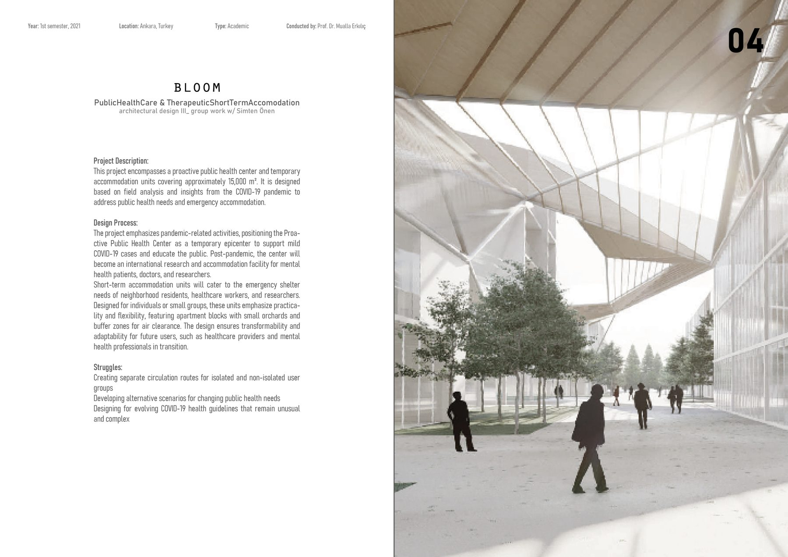
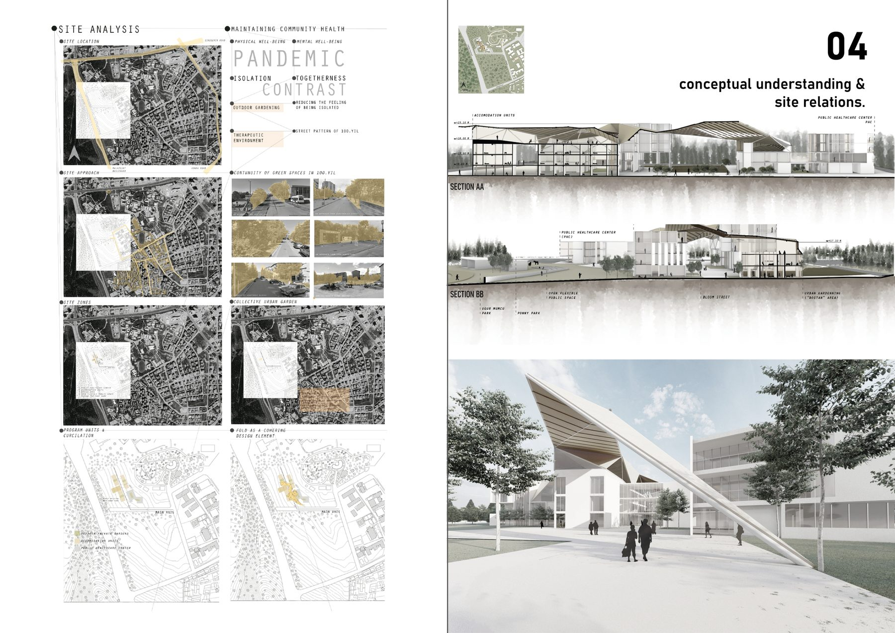
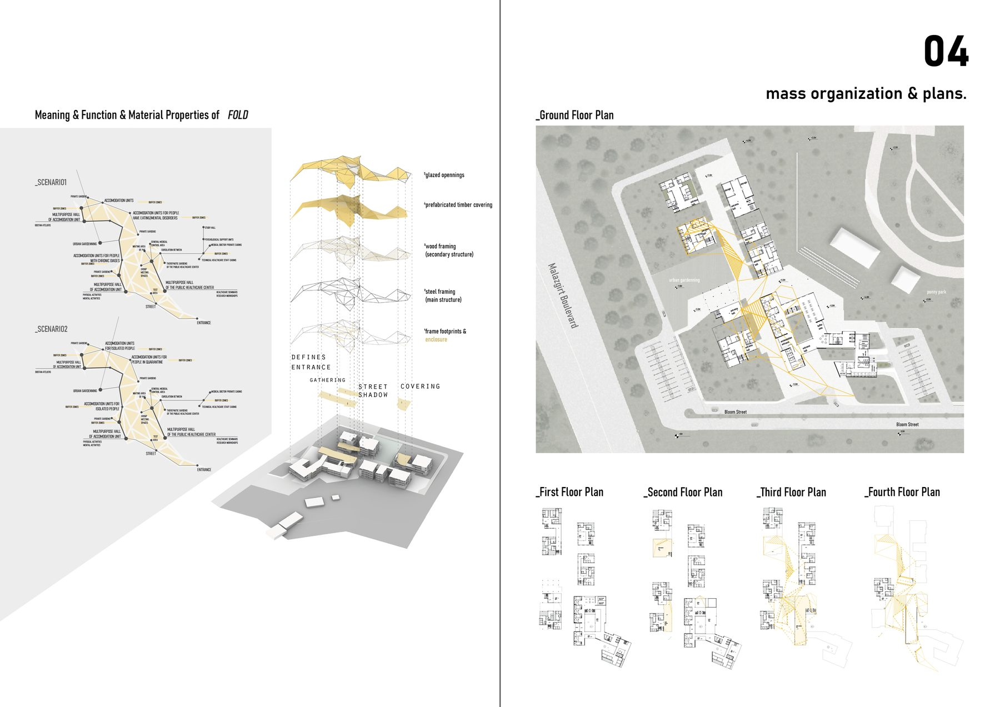